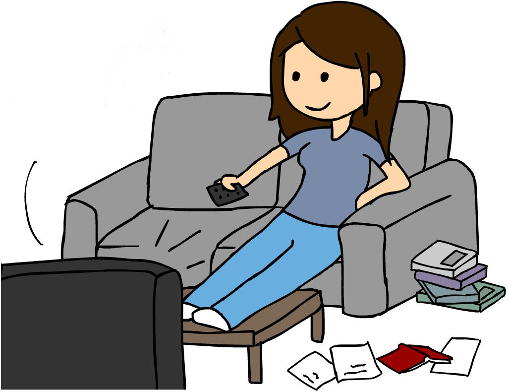
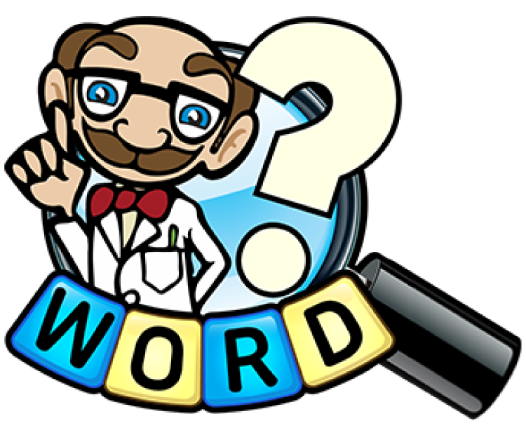

Viewing Party
Viewing Party is written in Python. It takes in movie-related dictionaries and outputs data, based on user requirements.
Features
- Create a movie
- Add movies to a "watched" dictionary
- Add movies to a "watchlist" dictionary
- Get the average rating of movies watched
- Determine the most watched genre
- Determine which movies a user has watched that their friends haven't - and vice versa
- Create and utilize movie recommendations
- Add a movie to favorites

Adagrams
Adagrams is written in Python. It is a game, similar to Scrabble, in which a player is given a random set of letters and must make an anagram using those letters. Each submitted word will score points.
Features
- Create a list of random letters for the user to make a word from
- Validate the word submitted
- Score each word submitted
- Determine the highest score of a selection of words
- Break ties if the highest word score is related to more than one word

Task List
Task List is an API written in Python, utilizing Flask as a framework. It allows a user to manage tasks and related goals. It utilizes a postgreSQL database and returns task related data in JSON format.
Features
- Create a task
- Retreive a specific task by ID
- Retrieve all tasks
- Sort tasks
- Mark tasks complete or incomplete
- Replace, update, or delete tasks
- Create a goal
- Link tasks to a specific goal